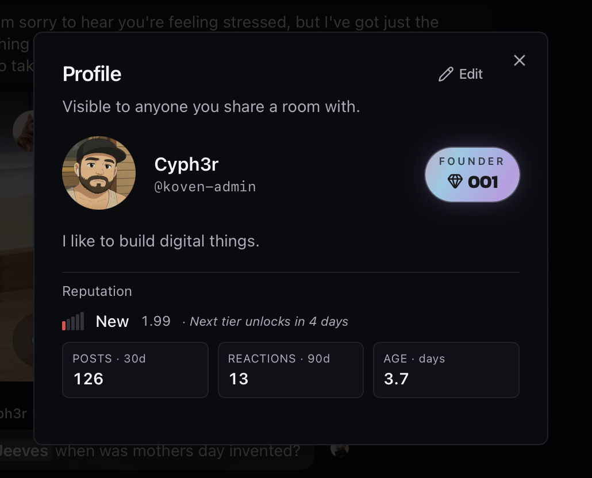

The chat your group
deserves.
Everything Discord ships - bots, voice, video, polls, GIFs, threads, the works. Plus encrypted DMs by default, and a moderation system that doesn't put one person's mood between you and the conversation. Bring your people here. Build something that lasts.
Claim your
Founder Badge.
The first 666 people to sign in to koven.chat get a permanent, holographic chip on their profile and next to their name everywhere they show up.
Auto-claimed on first login. No application. No waiting list. When they're gone, they're gone.

The chat platform your community deserves.
Everything Discord ships - bots, voice, video, polls, GIFs, threads, the works - plus encrypted DMs by default and a moderation system that doesn't put one person's mood between you and the conversation. Bring your people here. Build something that lasts.
LLM-powered bots
Drop in any OpenAI-compatible model. Give it a system prompt, a knowledge base, inbound webhooks (Twilio SMS, GitHub, anything), and outbound HTTP tools the LLM calls when it needs them.
E2E encrypted DMs
Encrypted by default. No toggle to forget, no opt-in flow. The engine can't read your DMs because the keys never leave your devices.
Spaces & rooms
Group your channels into spaces. Public, private, NSFW-gated. Custom icons and emoji. Pin the rooms that matter, hide the ones that don't.
Native polls
Quick polls or full-blown ranked options. Anonymous voting. Live tally. Closes on its own. No bot required.
Inline GIPHY search
Hit the GIF button, type, send. Trending and search both work. Same shape as Discord; lands in the message as a real image, not a link preview.
Files & attachments
Drag-drop or paste. Images preview inline. Videos play inline. Other files get a clean download card. End-to-end encrypted in DMs and private rooms.
Voice & video calls
1:1 audio + video built on WebRTC, with our own TURN server. Ringtone, accept/decline, the works.
Threads, reactions, replies
Reply to a specific message and the thread renders cleanly. React with custom emoji. Mention people; they get notified. Standard chat behaviour, done right.
Notifications you control
Per-room: all messages, mentions only, or muted. Per-bot DM: opt-in or block. Browser, OS, and in-app - all consistent.
Consensus moderation
Hiding a message takes three flaggers + a reputation threshold. Penalties expire. No mods, no shadow bans. How it works ↓
No telemetry
Koven doesn't phone home. No pixel, no analytics SDK. Your data stays yours.
DMs are end-to-end encrypted. By default. Always.
Every direct message on Koven is encrypted with Matrix's megolm protocol - keys never leave your devices, and the engine can't read a word. There's no toggle to forget; new DMs are encrypted from the first character.
- Cross-device key sharing via Secret Storage
- "Seen by" indicators that respect privacy boundaries
- Encrypted file uploads in DMs and private rooms
- Consensus moderation can't reach in - the UI tells you so
Spaces are servers. Rooms are channels.
If you've used Discord, you already know the shape. Spaces hold rooms; rooms hold conversations. Pin the ones you use. Set custom icons. Group people by interest, project, or vibe.
- Public spaces, private spaces, invite-only rooms, NSFW-gated rooms
- Custom emoji icons per room - quick visual scan of the sidebar
- Per-user pinning so YOUR sidebar is YOUR sidebar
- Threads, reactions, replies, and custom emoji throughout
Bots that actually do things.
Every Koven bot is a standalone identity backed by your model of choice - with knowledge files, tool-calling, and webhooks both directions. Build a customer-support agent in an afternoon, a daily news digest in ten minutes.
Bring your own LLM
Plug in OpenRouter or any OpenAI-compatible endpoint. Your key, your provider, your spend. The platform doesn't lock you in.
- System prompt, knowledge base files (.txt, .md, .docx, .rtf)
- Per-reply token caps, daily token / call quotas
- Configurable response length - Snappy to Detailed
- Per-bot avatar, bio, display name
Inbound webhooks
External services post to a unique URL; the bot processes the payload through its system prompt and posts the result into a chosen room.
- Twilio inbound SMS - paste your Auth Token, done
- GitHub events (push / PR / issue) with HMAC-SHA256 signing
- Generic JSON or form-urlencoded for n8n / Zapier / cron
- Auto-detects the source by signature header or payload shape
Outbound HTTP tools
Define HTTP requests the bot's LLM can fire when it decides to. The model picks the tool by name, fills in the params, and uses the response in its reply.
- "What's the weather in Tokyo?" → bot calls your weather API → answers
- News, calendar, status pages, internal services, n8n endpoints
- URL templates with {param} substitution + auth headers
- Editable inline; the bot picks them up immediately
Flag, tally, collapse, decay.
No mods. No founder veto. The community votes; we just log it. Every step is a documented event you can grep for.
Anyone flags any message
Pick a category. Add a reason. The flag is public, signed by you, visible to the room. No silent reports.
Engine tallies it up
Distinct flaggers and their combined reputation weight. Both have to cross documented thresholds. The thresholds are in GOVERNANCE.md.
Collapsed, not deleted
Hidden behind a click-to-expand. The original text stays. So does the link to the public flag reasons. Nothing gets nuked.
Penalties expire
Slow-mode, read-only, off-default-feed all wear off on their own. No appeal queue. No perma-bans. No exile.
Come hang out. Claim your badge before they're gone.
Sign in at koven.chat. The first 666 sign-ups get the holographic Founder chip on their profile, permanently.